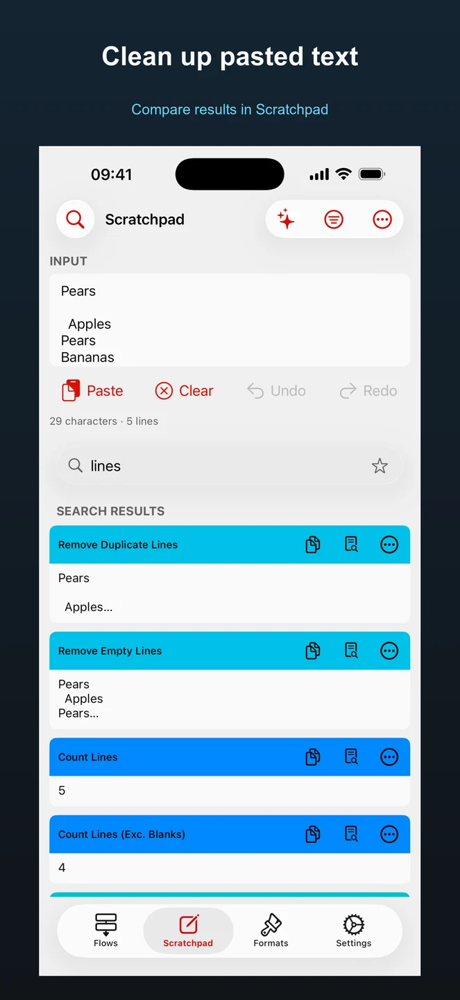
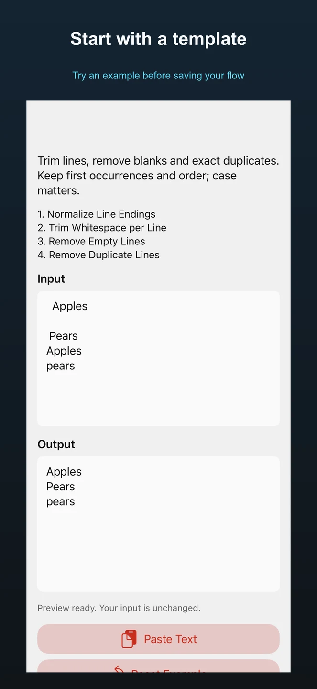
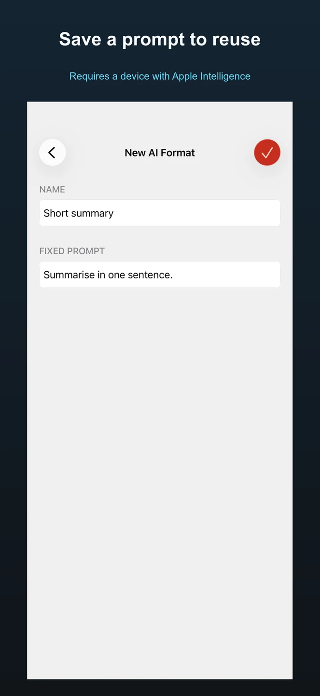
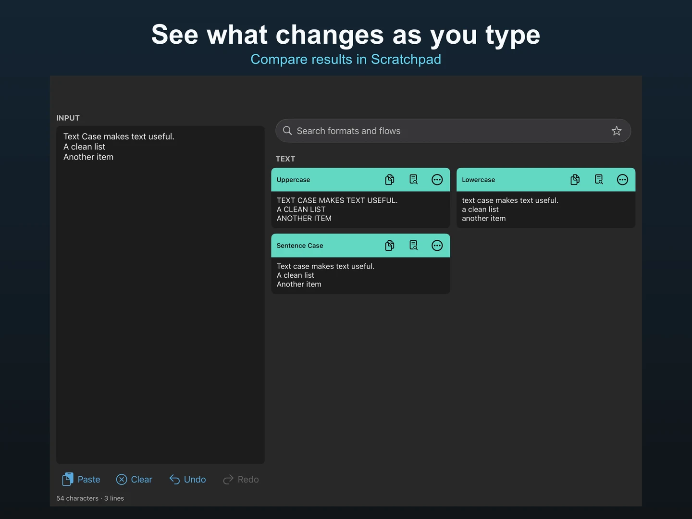
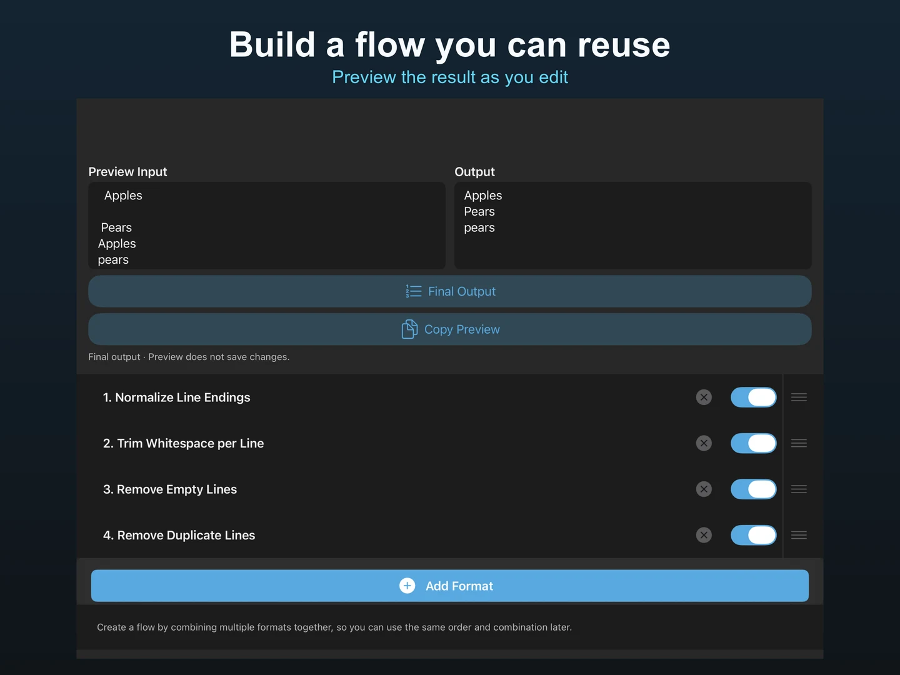
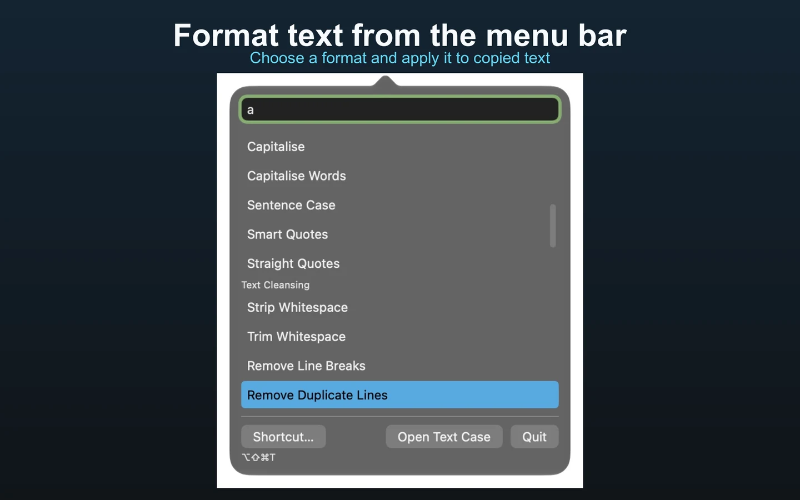
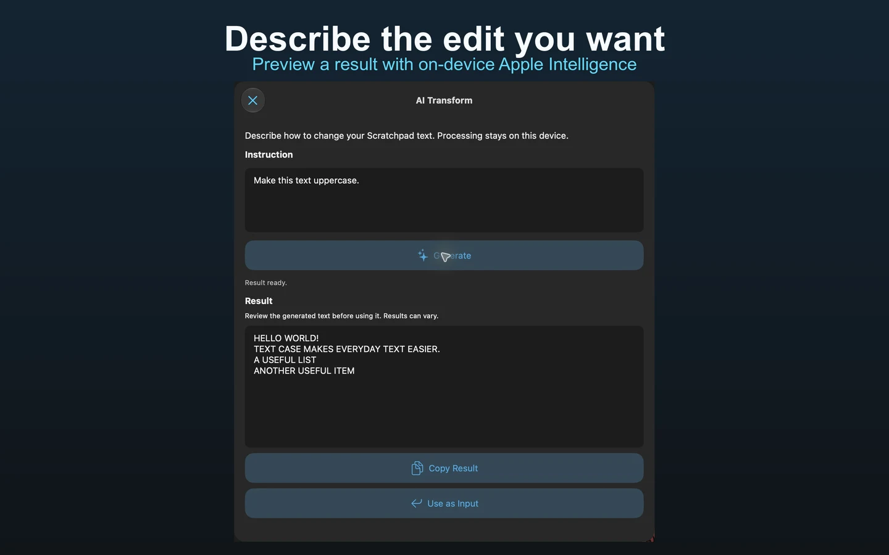
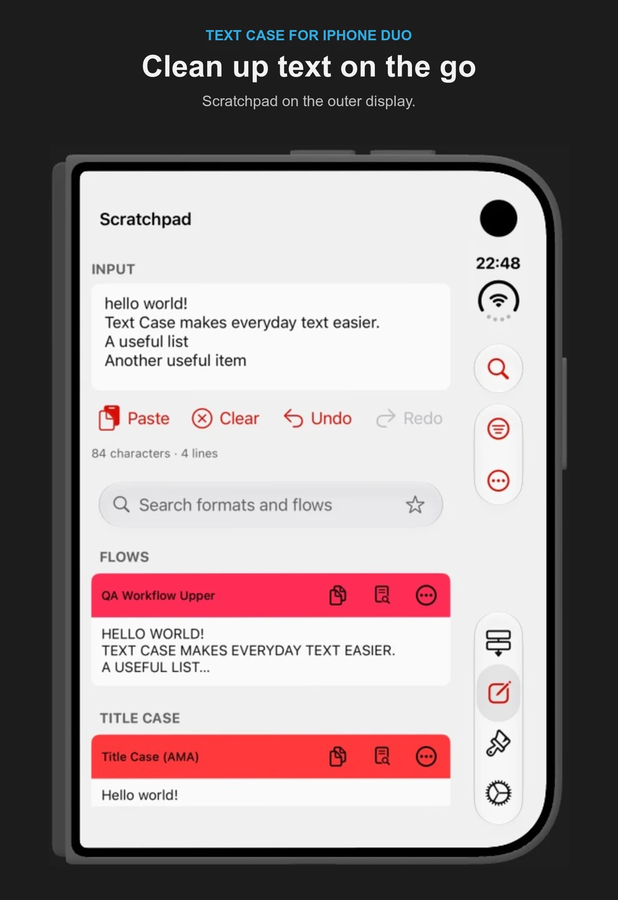
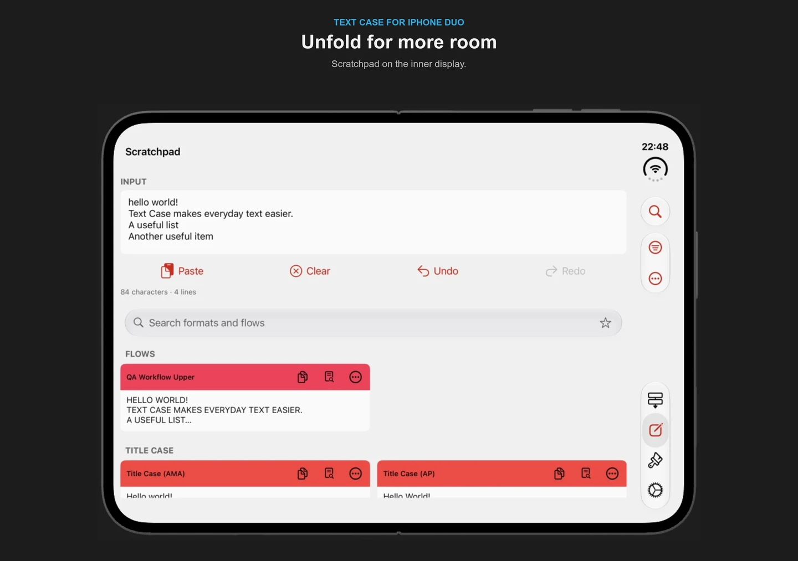

PRESS
Text Case press kit
Facts, app icons, screenshots and editable flow examples for Text Case 2026.1.
About Text Case
Text Case is an independent text formatting app by Chris Hannah for iPhone, iPad and Mac. It lets you combine text edits in a saved flow and run them again.
Version 2026.1 adds editable templates, step-by-step flow previews, a redesigned Scratchpad and a Mac menu bar picker that works on copied text. On supported devices, Apple Intelligence can turn an instruction into a reusable flow step with on-device generation.
Product details
- Developer — Chris Hannah
- Platforms — iPhone and iPad on version 26.0 or later, and Mac on macOS 26.0 or later
- Availability and local pricing — iPhone and iPad and Mac
Images
The press ZIP includes 17 full-resolution screenshots, platform icons, App Store artwork, a social preview image and editable sample flows. These images show synthetic sample text. The included capture notes identify the build 136 renders and earlier Mac and Duo screenshots.


















Try it for yourself
Open Flows → Templates → Clean a List, then edit the example and watch the result. The press kit also includes three downloadable recipes.